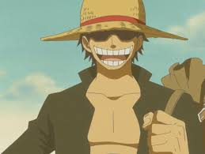
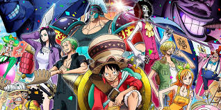

L'histoire de One Piece se déroule dans un monde fictif dominé par les océans, où certains pirates aspirent à une ère de liberté et d'aventure connue comme « l'âge d'or de la piraterie ». Cette époque fut inaugurée à la suite des derniers mots prononcés par le roi des pirates, Gol D. Roger, surnommé Gold Roger avant son exécution6. Roger annonce au monde que ses habitants étaient libres de chercher toutes les richesses qu'il avait accumulées durant sa vie entière, le « One Piece7. » Vingt-deux ans après l'exécution de Roger, l'intérêt pour le One Piece s’effrite. Beaucoup y ont renoncé, certains se demandent même s'il existe vraiment. Même si les pirates sont toujours une menace pour les habitants, la Marine est devenue plus efficace pour contrer leurs attaques sur les quatre mers : East Blue, North Blue, West Blue et South Blue. Pourtant, ce changement n'a pas dissuadé Monkey D. Luffy, un jeune garçon, de vouloir devenir le successeur du légendaire Roger. Il va ainsi partir à l’aventure en se donnant comme premier objectif de créer un équipage afin de rejoindre la mer de Grand Line, où la fièvre de la « grande vague de piraterie » continue de sévir, et où de nombreux grands noms de la piraterie sont à la poursuite du One Piece, supposé être sur la dernière île de cette grande mer, Laugh Tale (orthographe voulue par Oda).
One Piece possède son propre univers et met en scène une multitude de personnages hétérogènes. L'auteur accorde un soin particulier à la personnalité, l'aspect physique et l'histoire de ses personnages, même secondaires. Plusieurs groupes se distinguent. D'abord les pirates, éparpillés aux quatre coins du monde, ils sont de tous niveaux et possèdent chacun leurs équipages. Certains pirates ont des équipages de quelques hommes, d'autres possèdent des flottes entières, ils sont souvent recherchés et leurs têtes mise à prix, la somme de leur prime définit leur niveau de danger pour la marine et le gouvernement mondial. Ensuite la Marine, elle a une organisation hiérarchisée. Elle est dirigée par les amiraux et sa mission consiste à protéger la paix et les civils. Elle met un point d'honneur à poursuivre et enfermer les pirates. Les rapports entre la marine et les pirates, bien que conflictuels, sont loin d'être manichéens. En dehors des pirates et de la Marine évoluent d'autres personnages, on peut noter par exemple les chasseurs de primes, ils sont aussi à la poursuite des pirates et les capturent pour toucher la prime versée par la Marine. L'histoire suit principalement l'équipage de Chapeau de paille, mené par son capitaine Monkey D. Luffy, un jeune homme ayant mangé, enfant, sans le savoir le fruit du Gum Gum qui lui permet d'étirer ses membres, et dont le rêve est de devenir le Roi des pirates8,9. Il est par la suite rejoint par le sabreur à trois sabres Roronoa Zoro qui nourrit le rêve de devenir le meilleur sabreur du monde, le tireur d'élite couard Usopp, qui aspire à devenir un grand et vaillant guerrier des mers, le galant cuisinier Sanji qui souhaite découvrir All Blue, la navigatrice Nami experte en cartographie et météorologie, qui veut cartographier le monde, le renne et médecin de bord ayant mangé le fruit de l'humain Tony-Tony Chopper, l'historienne qui souhaite décrypter le Rio Ponéglyphe et découvrir l'histoire du "siècle oublié", Nico Robin, ayant mangé le fruit de l'éclosion (qui lui permet d’éclore chaque partie de son corps où elle le souhaite), l'ingénieur cyborg Franky, le pirate musicien ressuscité à l'état de squelette ambulant, Brook, ayant mangé le fruit de la résurrection, et le timonier Jinbe, ancien membre de l'ordre des Sept Grands Corsaires. À noter que les noms de plusieurs personnages sont présentés « à la japonaise », soit le nom avant le prénom : Monkey D. Luffy, Nico Robin, Vinsmoke Sanji, Gol D. Roger, Marshall D. Teach ou encore Don Quijote Doflamingo
progmmed by @49KZR